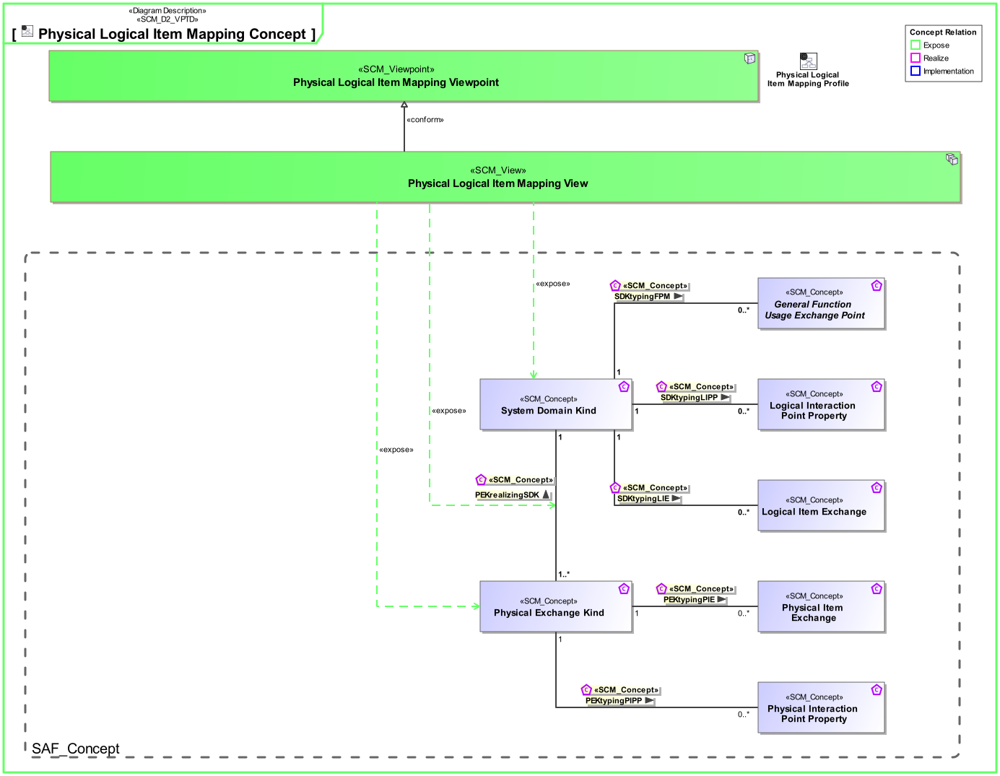
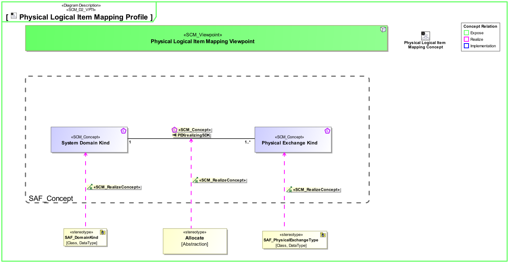

P8_PLIM Physical Logical Item Mapping Viewpoint
| Domain | Aspect | Maturity |
|---|---|---|
| Physical | Traceability & Mapping |
The Physical Logical Item Mapping Viewpoint specifies the assignment of the System Domain Kinds to Physical Exchange Kinds.
The Physical Logical Item Mapping Viewpoint supports [tbd].
A Physical To Logical Assigment Matrix featuring
The following Stereotypes / Model Elements are used in the Viewpoint:
The Diagram shows the concepts exposed by the viewpoint, and related concepts if necessary.

| Concept | Documentation |
|---|---|
| System Domain Kind | Specification for any kind of conceptual item (energy, material, information, etc.) to be exchanged on Functional or Logical Level. The System Domain Kind is agnostic to any realization on Physical Level. |
| PEKrealizingSDK | Specifies the fact that a System Domain Kind is realized by Physical Exchange Kinds. |
| Physical Exchange Kind | Specification for any kind of physical item (energy, material, information, etc.) to be exchanged on Physical Level. This is the realization of the specification made by System Domain Kinds. |
The Diagram shows the implementation of exposed concepts.

| Concept | Realization |
|---|---|
| System Domain Kind | SAF_DomainKind |
| PEKrealizingSDK | |
| Physical Exchange Kind | SAF_PhysicalExchangeType |